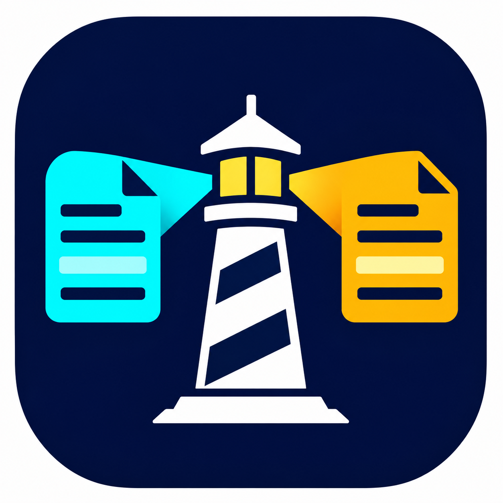

Start A Comparison
Choose two files, or paste text into the comparison panes.
Design Mockup · Same Workspace Layout · Shared App Palette · Native OS File Pickers Remain OS-Owned

DiffBeacon — Compare With ClarityChoose two files, or paste text into the comparison panes.
header
left-one
tailheader
right-one
tailBase · Read-Only name=base
Local · Read-Only name=local
Remote · Read-Only name=remote
No is focused by default. Escape or closing the prompt keeps the editor. Text can be selected and scrolled.
Keyboard focus is visible. High Contrast follows system colors. Manual platform checks remain required for Snap hover, mixed DPI/negative monitors, taskbars and assistive technology.